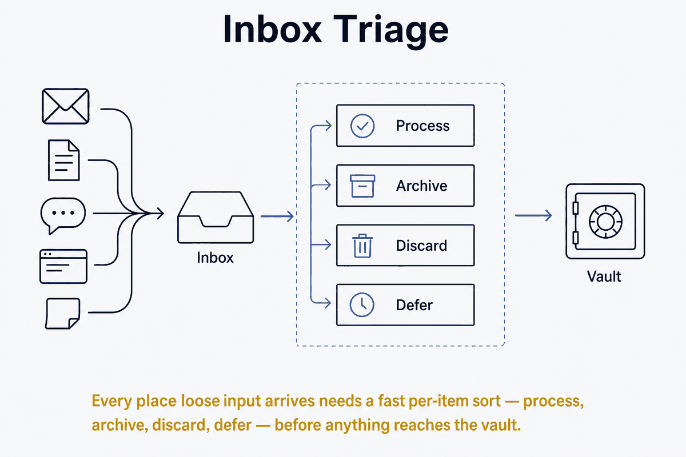

Every place loose input arrives needs a fast per-item sort — process, archive, discard, defer — before anything reaches the vault.

Every place where loose, unsorted input arrives — a capture note, a downloads folder, clipped articles, the collaboration inbox, documents that don't yet have a sidecar — needs a triage step: a fast, per-item decision about where each thing goes. Triage is what keeps an inbox from becoming a bottomless pit.
The word is medical, and the origin is the whole point: you decide the category quickly (urgent / can wait / hopeless) — you don't treat on the spot. An inbox where you try to fully handle each item as you touch it stalls; an inbox you triage first and process deliberately later flows. Triage is the fast sort that decides what gets processed, not the processing itself. Conflating the two is the most common way an inbox clogs.
The per-item decision is small and bounded: does this get processed (turned into something durable), archived (kept but not acted on), discarded (gone), or deferred (back to a queue with a clear next step)? Four outcomes, decided fast, is the entire discipline.
Triage is the boundary between unordered inflow and the ordered vault. Input lands in an inbox; triage routes it; the vault only ever receives things that have been sorted. Without the step, the inbox and the vault blur into one undifferentiated pile — which is exactly the state a structured vault exists to avoid.
Its outputs feed the vault's other chains. A triaged document becomes a sidecar; a triaged idea becomes a knowledge bite; a triaged task goes wherever tasks live. The collaboration inbox (see Publish Layer Over a Local First Source) is a triage surface by design — things arrive, and you decide, item by item, what earns a place in the source of truth.
Triage is a gate pointed at inflow: a control point with a per-item condition, deciding what may pass into the ordered vault. Same shape — an explicit decision, made in one place, with a safe default (unsorted stays in the inbox, not silently in the vault).
It's also the inflow counterpart to Digital Marie Kondo. Decluttering makes the keep-or-release decision about things already in the system; triage makes the same decision about things arriving. Together they close both ends: triage guards what comes in, decluttering handles what accumulated. And both fight the same enemy — because storage is non-rival and nothing forces the decision, the sorting pressure has to be manufactured as an explicit habit.
An inbox without triage is where capture goes to die: everything is saved, nothing is sorted, and the pile grows until searching it is worse than not having it. Triage is the cheap, repeated act that keeps capture worth doing — the guarantee that what you took in actually reaches the ordered part of the system, in a shape you can use.